2. 많은 기능들을 바로 쓰기 위해 불필요한 UI를 제거하고 직관적이고 함축적으로 배치하였습니다.(시간 + 버튼 등)
3. 높은 연령대(중년층)의 사용자를 배려하여 두꺼운 폰트를 사용하였으며, 드래그 드롭 등 조작이 힘드실 부분들은 화살표로 대신하였습니다.
4. 검색과 컨텐츠영역의 분리로 정보를 빠르게 인지하도록 시각적으로 구성하였습니다.
5. 두 앱의 브랜드의 일관성을 유지하였습니다.
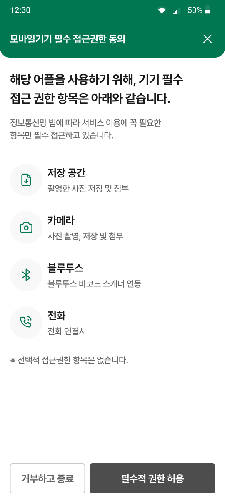
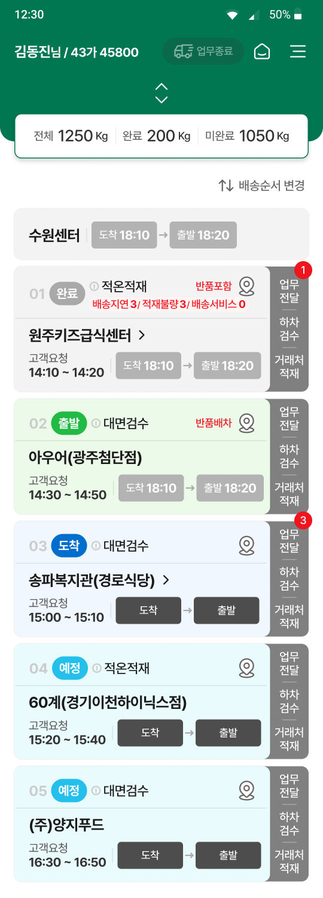
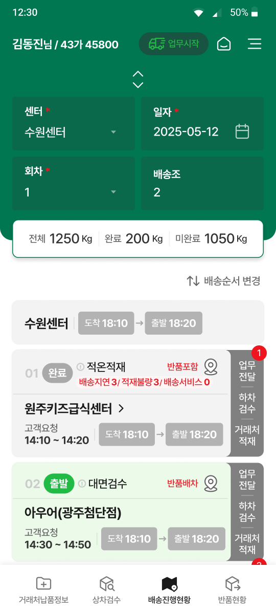
많은 데이터를 정리하기 위해 정보의 계층 질서를 정립하였으며 물류의 상태에 따른 색상의 변화로 정보를 색상화하여 정보를 더 쉽게 인지할 수 있도록 디자인하였습니다.
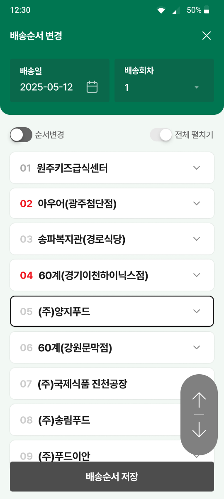
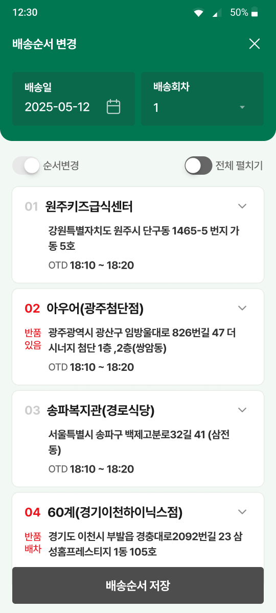
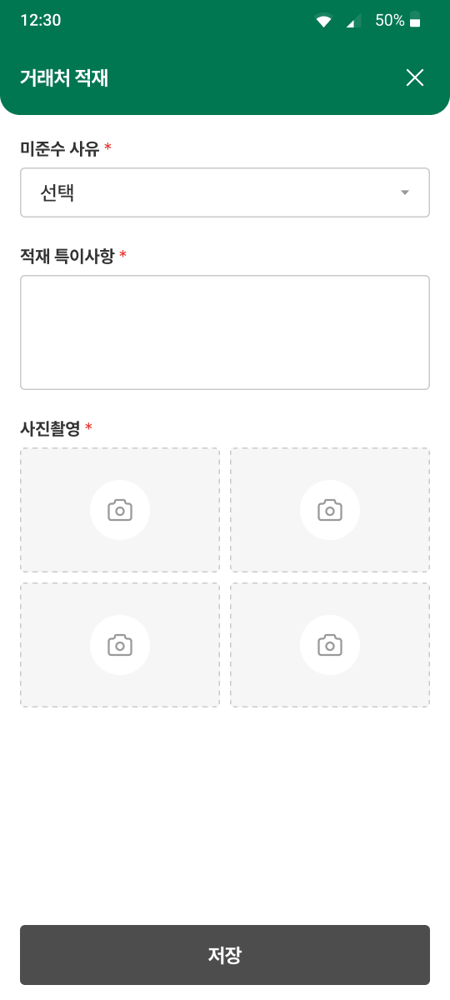
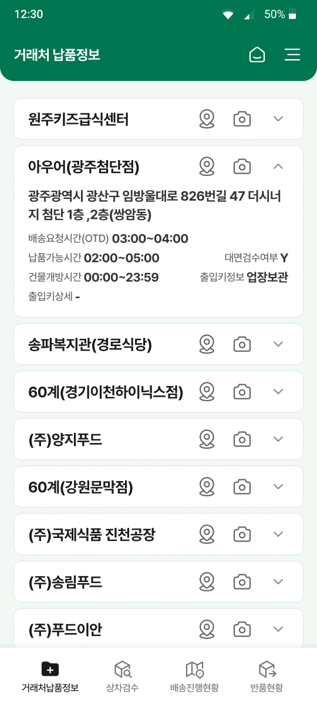
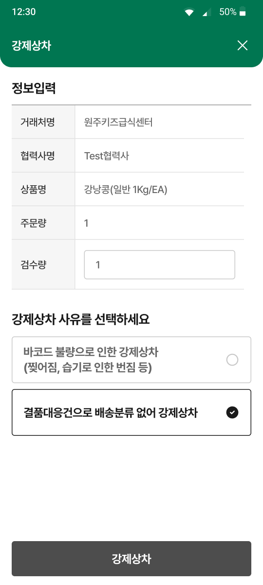
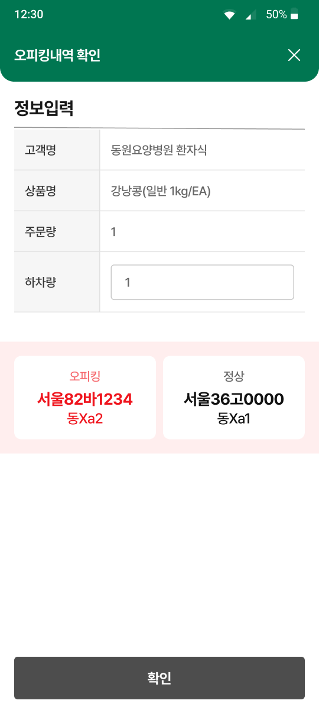
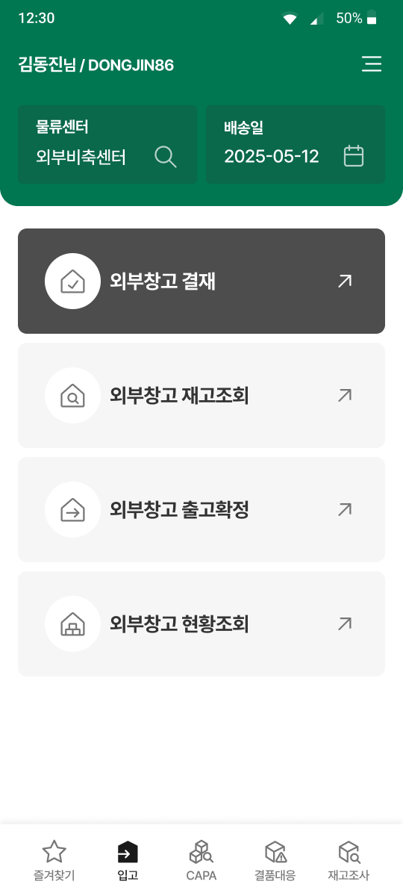
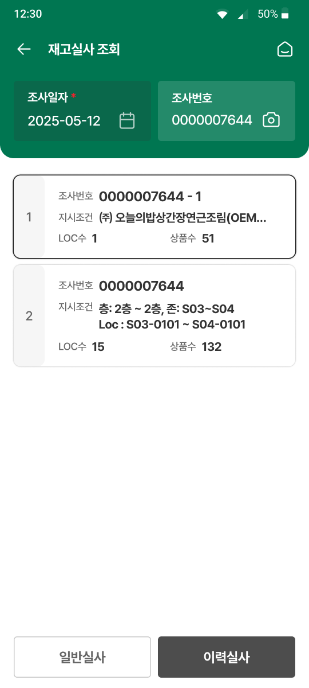
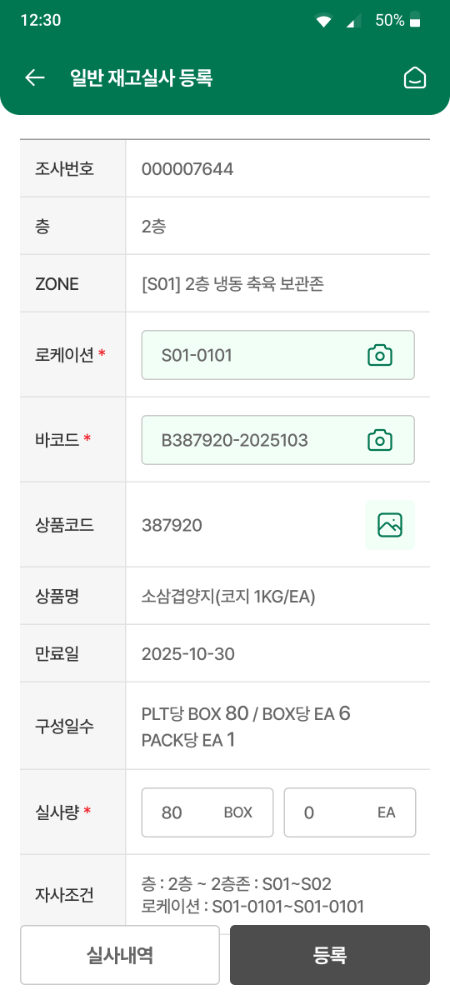
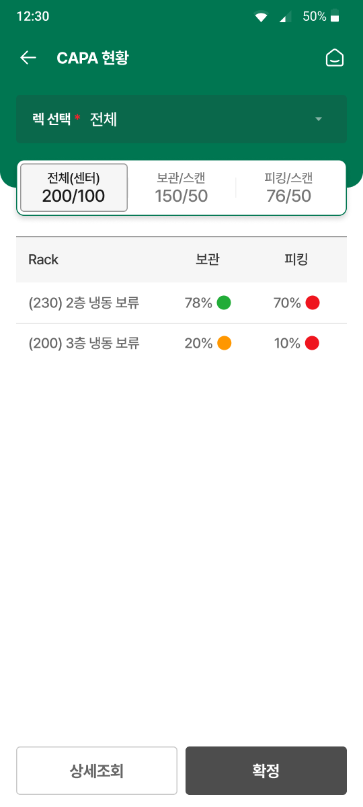
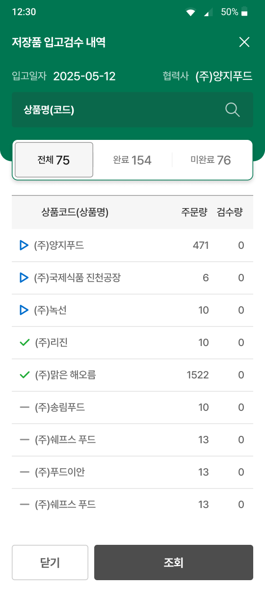
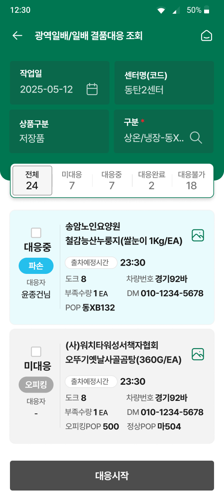